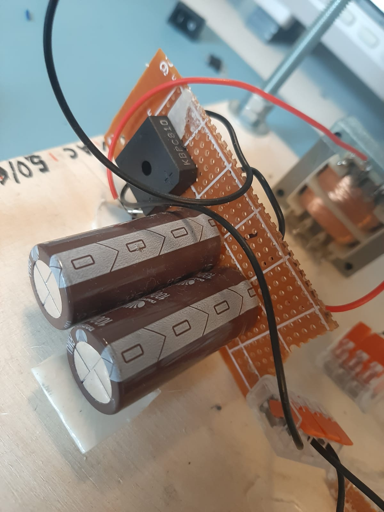
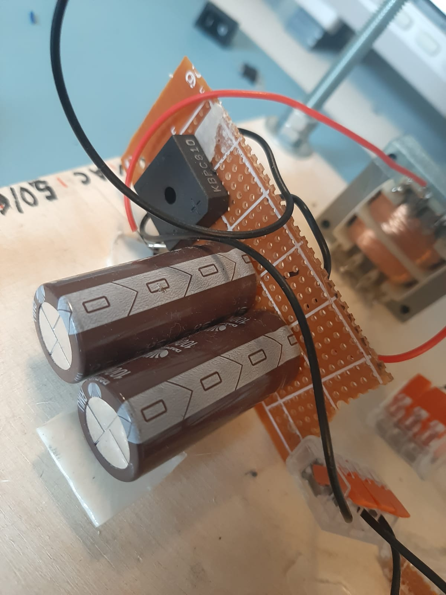

kacperks personal website
kacperks personal website
Go to Home Page
Hardware Projects
- Crappy Tesla Coil (Finished)
- Cappy DIY DB9 Atari Controller (Finished)
- 30V Coil Gun (Finished)
- badUSB using Raspberry Pico (Finished)
Big Solid State Tesla Coil (Almost Finished)
- Big SSTC2 circuit-based Tesla Coil powered from 450VDC
- More professional design than the old one
Crappy Tesla Coil (Finished)
- This Tesla coil uses a modification of the Slayer Exciter circuit by Mehdi (ElectroBoom)
- Initially, it was the basic Slayer Exciter circuit
- Powered by a DIY DC power supply (Transformer, FullBridge Rectifier, Capacitors)
- Schematic
 

Crappy DIY Atari 2600 Joystick
- Got a ~40-year-old Atari 2600 Junior without a controller
- So I decided to make my own simple DB9 game controller
- Schematic

Crappy 30V Coil Gun
- Uses a simple circuit I designed: MOSFET, coil (~600 turns), capacitor bank (7x 2200µF @ 50V), LED indicator
- Coil wound around a small syringe
- Schematic

DIY Bad USB (Raspberry Pico)
- Convert a cheap $5 Raspberry Pi Pico into a “bad USB” that runs DuckyScript payloads
- Tutorial video: YouTube Link
- My brother made a payload that spawns an annoying unstoppable music VB script after 6 minutes
- We tested it in a Media Markt store for fun (the staff had trouble stopping it)
- Source Code by my brother
Robotic Arm (Finished)
- Arduino-based robotic arm controlled via an inverse kinematics algorithm
- Mix of servo motors, linkages, and custom code